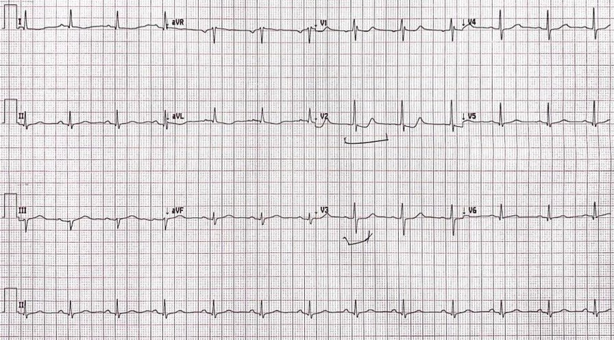
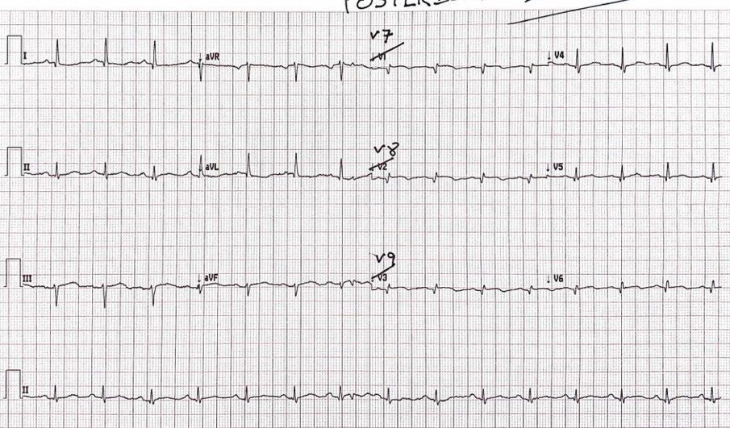

27/12/2021 — Các chuyển đạo phía sau có giúp ích gì ở ca này không? Sao không học cho giỏi dấu hiệu STDmaxV1-V4?
Bản dịch tiếng Việt của bài "Did the posterior leads help here? Why not just get good at STDmaxV1-V4?" – Dr. Smith’s ECG Blog. Giữ nguyên toàn bộ 2 hình ảnh của bản gốc.
Tác giả: Pendell Meyers
Một phụ nữ trung niên đến viện vì đau ngực và khó thở. Khám thực thể và dấu hiệu sinh tồn trong giới hạn bình thường.
Đây là điện tâm đồ lúc phân loại (triage) của bà:


Nhịp xoang với QRS tương đối bình thường (trừ thành phần dương đáng kể của QRS ở V2). Có ST chênh xuống (STD) ở V2-V4, không có bất thường QRS nào giải thích được, với ST dạng dốc xuống ở V2 và dạng nằm ngang ở V3-4. Do đó, đây là OMI thành sau cho đến khi chứng minh được điều ngược lại, vì ST chênh xuống tối đa ở V1-V4. Cũng có bằng chứng tinh tế của OMI thành dưới, với ST chênh xuống nhẹ và sóng T đảo ngược (TWI) ở aVL, kèm sóng T dương đầy đặn đáng ngờ ở III và aVF.
Gộp lại, trong bối cảnh lâm sàng này, các dấu hiệu trên là chẩn đoán xác định OMI dưới-sau.
Các bác sĩ đã ghi điện tâm đồ chuyển đạo phía sau, hy vọng nó sẽ giúp thuyết phục một bác sĩ tim mạch còn hoài nghi:


Bình luận của Smith: Đừng bao giờ thay V1-V3 bằng các chuyển đạo phía sau. Luôn thay V4-V6. Tại sao? Vì bạn muốn chắc chắn rằng dấu hiệu ở V1-V3 vẫn còn vào thời điểm bạn ghi V7-V8. Huyết khối mạch vành có tính động, lúc lan rộng, lúc tự tiêu. Đôi khi, đến lúc ghi được các chuyển đạo phía sau thì ST chênh xuống ở V1-V4 đã mất, và việc không có ST chênh lên ở V7-V9 là do thiếu máu cục bộ không còn nữa!
Ca bệnh tiếp diễn
Các chuyển đạo phía sau (trong ca này, đặt thay cho V1-V3) quả thật cho thấy ST chênh lên với mức rất rất nhỏ. Nhưng theo kinh nghiệm của tôi, những bác sĩ “bình thường” (không phải những người bị ám ảnh bởi các đường nguệch ngoạc và say mê đọc blog này) nhìn vào đây và chỉ đơn giản báo cáo rằng hoàn toàn không có ST chênh lên ở các chuyển đạo V7-9. Tôi chưa từng gặp một bác sĩ tim mạch nào ở bệnh viện của tôi đồng ý/thừa nhận rằng thực sự có ST chênh lên ở các chuyển đạo đó. Dù sau đó tôi có phóng to các chuyển đạo V7-9 và gửi qua email đi nữa thì cũng chẳng có gì thay đổi.
Theo kinh nghiệm của tôi, đây là kết quả thường gặp của các chuyển đạo phía sau: đúng vậy, thường có ST chênh lên ở các chuyển đạo phía sau trong OMI thành sau. Nhưng hầu như luôn luôn, mức ST chênh lên này nhỏ hơn về điện thế, và khó nhận ra hơn đối với người mới học, so với ST chênh xuống ở thành trước tối đa ở V1-V4 trên điện tâm đồ 12 chuyển đạo thông thường. Hệ quả đối với những người không hiểu điều này: họ cảm thấy điện tâm đồ chuyển đạo phía sau khiến họ gạt bỏ OMI thành sau, hoặc thấy nó có vẻ “cải thiện” so với trước, nghĩa là bệnh nhân đang đáp ứng với điều trị nội khoa và không phải là “STEMI tồn tại thực sự”.
Cả hai bác sĩ đều hoài nghi về các điện tâm đồ. Nhưng, một cách đúng đắn, cả hai đều lo ngại về bệnh nhân có hội chứng vành cấp (ACS) rõ ràng, đang diễn ra và các dấu hiệu điện tâm đồ “động”. Troponin lần đầu “dương tính” (tôi không lấy được kết quả). Vì vậy bà được đưa đi thông tim khá nhanh.
Họ phát hiện tắc hoàn toàn LCX (tôi không có chi tiết chính xác về vị trí hay dòng chảy TIMI, nhưng họ ghi là “tắc hoàn toàn”, mà theo định nghĩa thì phải là TIMI 0). Một stent đã được đặt.
Tiếc là tôi không có chi tiết về troponin hay siêu âm tim của ca này.
Bệnh nhân hồi phục tốt và sau đó được xuất viện.
Những điểm cần học:
Bệnh nhân này không đạt tiêu chuẩn STEMI nhưng rõ ràng được lợi từ tái tưới máu cấp cứu.
Tôi thấy ca này là một ví dụ điển hình về vai trò của các chuyển đạo phía sau trong bối cảnh một OMI thành sau khá tinh tế. Ca này là một trong rất nhiều ca đã hình thành nên quan điểm của tôi về các chuyển đạo phía sau:
– Chuyên gia thường không cần đến chúng, vì họ có thể dễ dàng nhận ra OMI thành sau qua ST chênh xuống tối đa ở V1-V4. Chúng là sự lãng phí thời gian với những ca OMI thành sau rõ ràng. Việc dùng chúng trong những tình huống không cần thiết duy trì quan niệm rằng chúng có vai trò quan trọng, cản trở việc học dấu hiệu STDmaxV1-4 (ST chênh xuống tối đa ở V1-4).
– Người mới học đôi khi bị chúng làm cho yên tâm sai lầm, thường là do điện thế rất thấp của các chuyển đạo phía sau.
– Các chuyển đạo phía sau rất hiếm khi được đánh dấu và lưu trữ đúng cách trong hồ sơ bệnh án điện tử (EMR), khiến chúng tôi hoàn toàn không thể nghiên cứu hồi cứu chúng trong nghiên cứu về OMI thành sau của mình.
Mặc dù tôi tin rằng các chuyển đạo phía sau đôi khi có vai trò quan trọng khi được những người đọc điện tâm đồ giàu kinh nghiệm sử dụng, tôi cho rằng các bác sĩ nên tập trung vào ST chênh xuống tối đa ở V1-V4 như dấu hiệu chỉ điểm quan trọng nhất của OMI thành sau.
Nếu bạn ghi các chuyển đạo phía sau, hãy thay V4-V6, chứ không phải V1-V3!
Vẫn lưu ý như mọi khi về thành “sau” so với thành “bên”, v.v.; tất cả các bạn đều biết tôi đang nói về vùng nào.